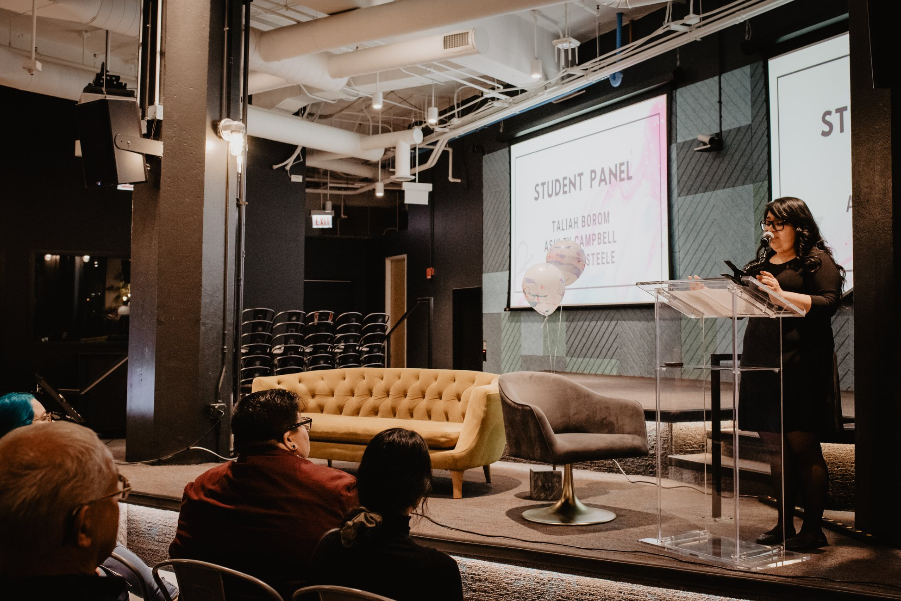

About Jessica DeJesus
I am working towards my Bachelor’s and Master’s in a 5 year program. I will receive my Bachelors in Information Technology and Management with a minor in Communications, and a Masters in ITM with a specialization in IT management & Entrepreneurship.
I would like to works towards addressing the lack of diversity in the IT world. According to data from the National Center for Women & Information, as of 2015, women hold only 25 percent of computing roles. I would like to drive innovation through inclusivity and diversity. In my career, I would hope to ensure new emerging technologies are built to include all types of people.
